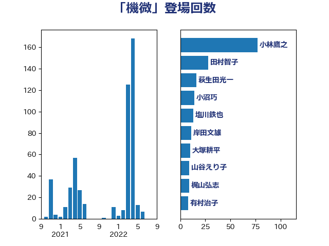

単語「機微」

| 小林鷹之 | 自由民主党 | 77 回 |
| 田村智子 | 日本共産党 | 28 回 |
| 萩生田光一 | 自由民主党 | 16 回 |
| 小沼巧 | 立憲民主党 | 14 回 |
| 塩川鉄也 | 日本共産党 | 13 回 |
| 岸田文雄 | 自由民主党 | 11 回 |
| 大塚耕平 | 国民民主党 | 10 回 |
| 山谷えり子 | 自由民主党 | 9 回 |
| 梶山弘志 | 自由民主党 | 9 回 |
| 有村治子 | 自由民主党 | 8 回 |
| 茂木敏充 | 自由民主党 | 8 回 |
| 山田賢司 | 自由民主党 | 7 回 |
| 三浦信祐 | 公明党 | 6 回 |
| 中山展宏 | 自由民主党 | 6 回 |
| 川田龍平 | 立憲民主党 | 6 回 |
| 石川昭政 | 自由民主党 | 6 回 |
| 篠原豪 | 立憲民主党 | 5 回 |
| 高木啓 | 自由民主党 | 5 回 |
| 大石あきこ | れいわ新選組 | 4 回 |
| 尾身朝子 | 自由民主党 | 4 回 |
| 杉尾秀哉 | 立憲民主党 | 4 回 |
| 江島潔 | 自由民主党 | 4 回 |
| 石橋通宏 | 立憲民主党 | 4 回 |
| 礒崎哲史 | 国民民主党 | 4 回 |
| 中島克仁 | 立憲民主党 | 3 回 |
| 倉林明子 | 日本共産党 | 3 回 |
| 太田房江 | 自由民主党 | 3 回 |
| 山本左近 | 自由民主党 | 3 回 |
| 岡田克也 | 立憲民主党 | 3 回 |
| 岩渕友 | 日本共産党 | 3 回 |
| 柳ヶ瀬裕文 | 日本維新の会 | 3 回 |
| 柴田巧 | 日本維新の会 | 3 回 |
| 櫻井周 | 立憲民主党 | 3 回 |
| 磯崎仁彦 | 自由民主党 | 3 回 |
| 蓮舫 | 立憲民主党 | 3 回 |
| 中谷元 | 自由民主党 | 2 回 |
| 井上信治 | 自由民主党 | 2 回 |
| 宮崎政久 | 自由民主党 | 2 回 |
| 小西洋之 | 立憲民主党 | 2 回 |
| 小野泰輔 | 日本維新の会 | 2 回 |
| 岸信夫 | 自由民主党 | 2 回 |
| 平井卓也 | 自由民主党 | 2 回 |
| 浅野哲 | 国民民主党 | 2 回 |
| 田島麻衣子 | 立憲民主党 | 2 回 |
| 田村まみ | 国民民主党 | 2 回 |
| 石川大我 | 立憲民主党 | 2 回 |
| 鈴木義弘 | 国民民主党 | 2 回 |
| 阿部知子 | 立憲民主党 | 2 回 |
| 高木かおり | 日本維新の会 | 2 回 |
| 一谷勇一郎 | 日本維新の会 | 1 回 |
| 中谷真一 | 自由民主党 | 1 回 |
| 伊佐進一 | 公明党 | 1 回 |
| 古川禎久 | 自由民主党 | 1 回 |
| 吉川沙織 | 立憲民主党 | 1 回 |
| 塩田博昭 | 公明党 | 1 回 |
| 太栄志 | 立憲民主党 | 1 回 |
| 小山展弘 | 立憲民主党 | 1 回 |
| 小沢雅仁 | 立憲民主党 | 1 回 |
| 山田宏 | 自由民主党 | 1 回 |
| 岡本あき子 | 立憲民主党 | 1 回 |
| 岩田和親 | 自由民主党 | 1 回 |
| 工藤彰三 | 自由民主党 | 1 回 |
| 後藤祐一 | 立憲民主党 | 1 回 |
| 本村伸子 | 日本共産党 | 1 回 |
| 河西宏一 | 公明党 | 1 回 |
| 河野義博 | 公明党 | 1 回 |
| 浮島智子 | 公明党 | 1 回 |
| 熊田裕通 | 自由民主党 | 1 回 |
| 片山さつき | 自由民主党 | 1 回 |
| 牧島かれん | 自由民主党 | 1 回 |
| 田畑裕明 | 自由民主党 | 1 回 |
| 矢倉克夫 | 公明党 | 1 回 |
| 石川博崇 | 公明党 | 1 回 |
| 笠井亮 | 日本共産党 | 1 回 |
| 落合貴之 | 立憲民主党 | 1 回 |
| 藤巻健太 | 日本維新の会 | 1 回 |
| 赤羽一嘉 | 公明党 | 1 回 |
| 足立康史 | 日本維新の会 | 1 回 |
| 逢坂誠二 | 立憲民主党 | 1 回 |
| 野田聖子 | 自由民主党 | 1 回 |
| 金子恭之 | 自由民主党 | 1 回 |
| 長谷川淳二 | 自由民主党 | 1 回 |
| 青山繁晴 | 自由民主党 | 1 回 |
| 青柳仁士 | 日本維新の会 | 1 回 |
| 高市早苗 | 自由民主党 | 1 回 |